1과목: 수처리공정
1. 슬러지의 탈수성에 관한 설명으로 옳지 않은 것은?
2. 응집제의 주입 특성에 관한 설명으로 옳지 않은 것은?
3. 침전지의 설계기준으로 옳은 것을 모두 고른 것은?
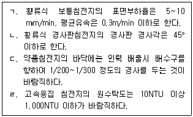
4. 맛·냄새 물질의 제거에 관한 설명으로 옳지 않은 것은?
5. 침전지의 길이 70m, 폭 10m, 유효수심 4.8m이고 체류시간이 4h일 때, 표면부하율(mm/min)은?
6. 분말활성탄의 주입방법과 효과에 관한 설명으로 옳은 것은?
7. 배출수 및 슬러지처리시설의 농축조에 관한 설명으로 옳은 것은?
8. 소독제의 저장설비에 관한 설명으로 옳은 것은?
9. 수인성 질병을 일으키는 원생동물로만 구성된 것으로 옳은 것은?
10. 정수지의 용량에 관한 설명으로 옳지 않은 것은?
11. 오존발생장치와 주입설비에 관한 설명으로 옳지 않은 것은?
12. 소독에 의한 불활성화비 계산에 관한 설명으로 옳지 않은 것은?
13. 소독부산물에 관한 설명으로 옳지 않은 것은?
14. 감쇠여과방식에 관한 설명으로 옳지 않은 것은?
15. 여과지의 역세척에 관한 설명으로 옳은 것은?
16. 급속모래여과지가 갖추어야 할 기능으로 옳지 않은 것은?
17. 여과지 성능을 평가할 때 사용되는 지표로 옳지 않은 것은?
18. 균등계수에 관한 설명으로 옳은 것은?
19. 막여과 정수시설에 관한 설명으로 옳은 것을 모두 고른 것은?
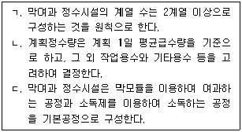
20. 여과수량이 24m3/h이고 막면적이 288m2 일 때, 막여과시설의 막여과유속(m3/m2·d)은 얼마인가?
2과목: 수질분석 및 관리
21. 먹는물수질공정시험기준상 용어에 관한 설명이다. ( )에 들어갈 내용을 순서대로 옳게 나열한 것은?
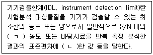
22. 먹는물수질공정시험기준상 용어의 정의로 옳지 않은 것은?
23. 수질오염공정시험기준상 투명도 측정에 관한 설명으로 옳은 것을 모두 고른 것은?
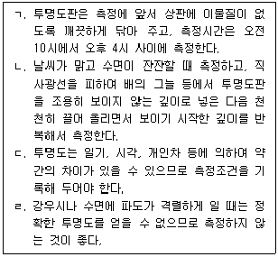
24. 먹는물 수질감시항목 운영 등에 관한 고시상 먹는물 수질감시항목 중 검사주기가 가장 짧은 것은?
25. 불활성화비 계산방법 및 정수처리 인증 등에 관한 규정상 다음 용어에 해당하는 것은?
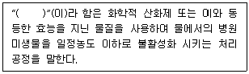
26. 수처리제의 기준과 규격 및 표시기준상 살균℃소독제에 해당되지 않은 것은?
27. 불활성화비 계산방법 및 정수처리 인증 등에 관한 규정상 급속여과방식에서 소독에 의한 병원성 미생물 제거율 및 불활성화비에 관한 내용이다. ( )에 들어갈 내용으로 옳지 않은 것은?
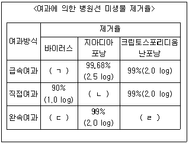
28. 먹는물수질공정시험기준상 총대장균군의 측정 방법으로 옳지 않은 것은?
29. 화학적산소요구량 측정법 중 산성 과망간산칼륨법에 관한 설명으로 옳지 않은 것은?
30. 수질오염공정시험기준상 물벼룩을 이용한 급성독성시험법에 관한 설명으로 옳은 것은?
31. 제타전위(zeta-potential) 계산시 필요한 전기영동도(전기이동도, electrophoretic mobility)의 크기에 관한 설명으로 옳지 않은 것은?
32. 자-테스트(Jar-Test)에 관한 설명으로 옳지 않은 것은?
33. 상수도설계기준에서 정한 배오존설비의 종류에 해당되지 않은 것은?
34. 오염물질의 종류에 따른 오존주입률에 관한 설명으로 옳지 않은 것은?
35. 먹는물 수질기준 및 검사 등에 관한 규칙상 염지하수에 적용되는 방사능에 관한 기준으로 옳은 것은?
36. 먹는물관리법령상 자동계측기의 설치 및 운영·관리기준에 관한 설명으로 옳지 않은 것은?
37. 먹는물 수질감시항목 운영 등에 관한 고시상 먹는샘물의 감시항목이 아닌 것은?
38. 수도법령상 바이러스 분포실태 조사방법에 관한 설명이다. ( )에 들어갈 내용으로 옳은 것은?
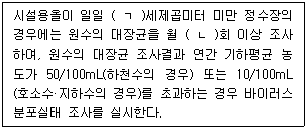
39. 수도법령상 5만m3 이상 10만m3 미만 시설규모의 정수장에 배치해야 할 정수시설운영관리사의 배치기준으로 옳은 것은?
40. 먹는물관리법상 다음 용어에 해당하는 것은?
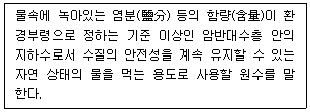
3과목: 설비운영(기계·장치 또는 계측기 등)
41. 침전지 정류설비 설치 시 고려하는 사항으로 옳지 않은 것은?
42. 응집용 약품주입설비에 관한 설명으로 옳지 않은 것은?
43. 여과지 내의 트로프(trough)에 관한 설명으로 옳은 것은?
44. 유공블록형 하부집수장치에 관한 설명으로 옳지 않은 것은?
45. 여재의 유효경 0.5mm, 공극률 0.45이고 비중이 2.65인 모래층 25cm와 유효경 1.0mm, 공극률 0.5이며 비중이 1.65인 안트라사이트층 55cm로 구성된 2층여과지에서 표면세척시설을 갖추고 있을 경우 알맞은 역세척조건에서 손실수두(cm)는 약 얼마인가? (단, 모래층 팽창률 37%, 안트라사이트층 팽창률 25%, 팽창된 여과 층의 공극률 0.6이다.)
46. 상수도설계기준상 액화염소 저장설비에 관한 설명으로 옳은 것은?
47. 자외선(UV)소독설비에 관한 설명으로 옳지 않은 것은?
48. 다음의 조건에서 펌프 효율은 약 얼마인가?
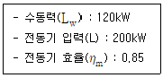
49. 펌프의 서징 현상 및 방지대책에 관한 설명으로 옳지 않은 것은?
50. 펌프의 고효율 운전법으로 옳은 것은?
51. 고압간선에 표와 같은 A, B 수용가가 있다. A, B 각 수용가의 개별 부등률은 1.0 이고 A, B 간 상호 부등률은 1.3이라고 할 때 고압간선에 걸리는 최대 부하용량(kVA)은 약 얼마인가?
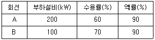
52. 다음 그림에서 A-B 간의 합성 인덕턴스(mH)는? (단, 상호 인덕턴스는 무시한다.)
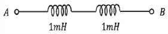
53. 3상 3선식 선로에서 수전단 전압 6,600V, 지상역률 90%, 100kVA의 3상 평형 부하가 연결되어 있다. 선로 임피던스가 R = 10Ω, X = 50Ω인 경우 송전단전압(V)은 약 얼마인가?
54. 전압계, 전류계, 그리고 전력계에 관한 설명으로 옳은 것은?
55. 상수도설계기준상 정수장의 컴퓨터를 사용하는 제어 방식은 집중제어방식과 분산 제어방식으로 크게 나눌 수 있다. 분산제어방식에 관한 설명으로 옳지 않은 것은?
56. 상수도설계기준상 계측 기기에서 발생하는 오차의 원인이 되는 노이즈 중에서 정전유도 노이즈와 전자유도 노이즈에 관한 설명으로 옳은 것은?
57. 차압식유량계 설치 시 유의할 사항으로 옳지 않은 것은?
58. 산업안전보건법령상 유해하거나 위험한 기계·기구·설비로서 안전검사대상인 것은?
59. 산업안전보건법령상 안전보건관리책임자 등에 대한 교육 내용이다. ( )안에 들어갈 내용으로 옳은 것은?
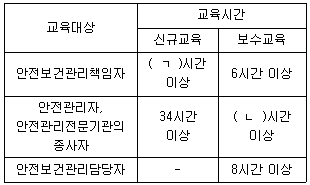
60. 산업안전보건법령상 유해·위험 기계기구의 방호조치로 옳지 않은 것은?
4과목: 정수시설 수리학
61. 동점성계수의 차원을 [FLT]계로 표시한 것은?
62. 원형관에서 모세관현상의 상승고에 관한 설명으로 옳은 것은?
63. 지름 100cm인 관에 3.5m/s의 유속으로 물이 가득차서 흐르고 있다. 이 관로의 200m 구간 마찰손실수두가 5m일 때 마찰손실계수는 얼마인가?
64. 레이놀즈 수에 관한 설명으로 옳지 않은 것은?
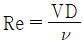
이다. 여기서, ν=동점성계수, V=단면평균유속, D=관경 이다.65. 하천의 평균유속을 1점법으로 계산하는 방법은? (단, Vm은 평균유속이고, V0.2, V0.6, V0.8에서 아래첨자는 수심이 1일 때 수면으로부터 유속을 측정한 지점을 나타낸다.)
66. 그림과 같이 수조의 측벽에 설치된 직경 10cm의 오리피스를 통하여 물이 분출 될 때, 분출되는 유량(L/s)은 약 얼마인가? (단, 수조 내 수심은 일정하게 유지되며, 손실은 무시한다.)
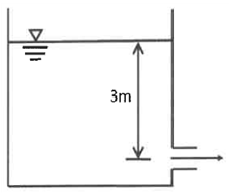
67. 그림과 같은 관수로에 1.0m3/s의 유량이 가득차서 흐르고 있다. 각 단면에서의 유속(m/s)은 약 얼마인가? (단, 관의 직경 D1=100cm, D2=70cm, 흐름은 정상류이며, 손실은 무시한다.)
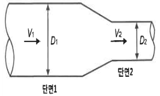
68. 침전지의 깊이가 3m, 표면적이 3m2, 유량이 36m3/d 일 때 체류시간(h)은?
69. 침전지에서 제거율을 향상시키기 위한 설명으로 옳은 것은?
70. 관수로의 층류 흐름에서 마찰손실계수(f)에 관한 설명으로 옳은 것은?
71. 관수로 흐름에서 발생하는 손실수두에 관한 설명으로 옳은 것을 모두 고른 것은?
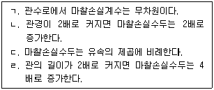
72. 조도계수 0.014, 동수경사 0.01, 관경 400mm일 매 이 관로의 유량(m3/s)은? (단, 만관기준이며, Manning 공식에 따른다.)
73. 부피가 5,000m3인 탱크에서 G(속도경사) 값을 30/s 유지하기 위해 필요한 이론적 소요동력(W)은 약 얼마인가? (단, 물의 점성계수는 1.139×10-3N·s/m2 이다.)
74. 여과지의 입도 분석 결과로, 중량통과을 10%의 입경 0.2mm, 20%의 입경 0.4mm, 40%의 입경 0.6mm, 60%의 입경 0.8mm일 때, 여과지의 균등계수는 얼마인가?
75. 효율이 85%, 동력이 25,000kW인 펌프를 이용하여 100m 위의 수조로 물을 양수 할 때, 유량(m3/s)은 약 얼마인가? (단, 손실수두는 10m이다.)
76. 전양정 4m, 양수량 600m3/h, 회전속도 1,200rpm인 펌프의 비교회전도는 약 얼마인가?
77. 펌프의 캐비테이션(공동현상) 방지대책으로 옳지 않은 것은?
78. 펌프의 특성곡선에 관한 설명으로 옳지 않은 것은?
79. A 정수장의 펌프가 1,000rpm으로 전양정 80m, 유속 1.0m/s로 유량을 보낼 시 축동력은 20kW이다. 펌프의 상사법칙에 따라 회전차의 지름이 2배인 펌프가 500rpm으로 운전된다면 축동력(kW)은 얼마인가?
80. 펌프가 동력을 잃고 수격현상이 발생되는 경우에 관한 설명으로 옳지 않은 것은?